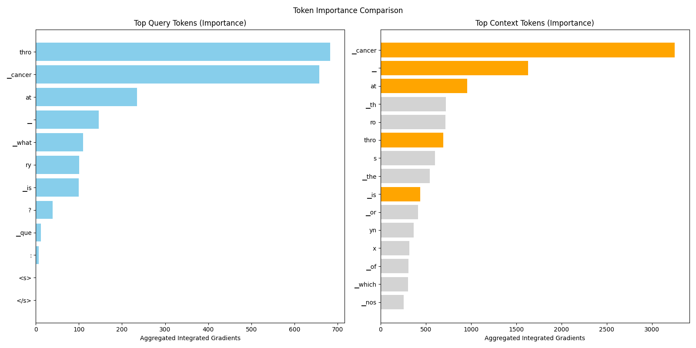
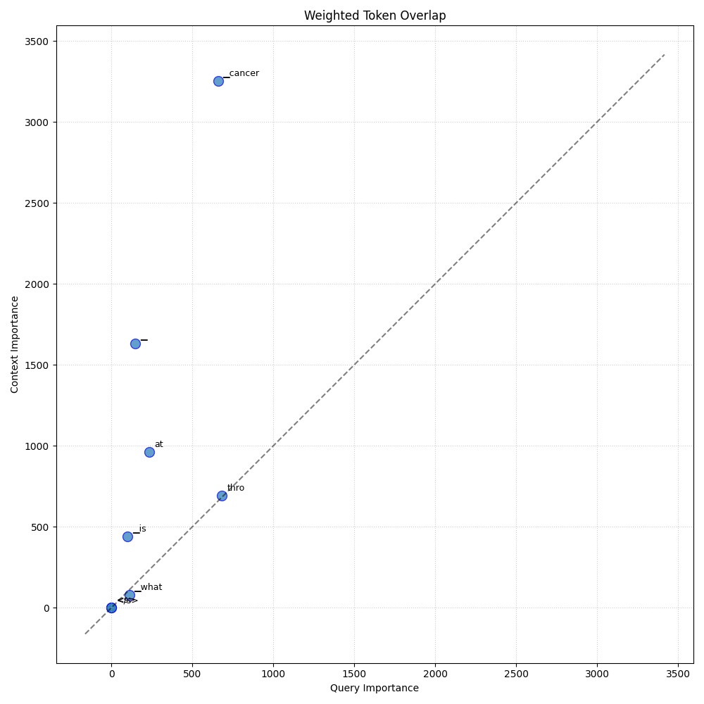
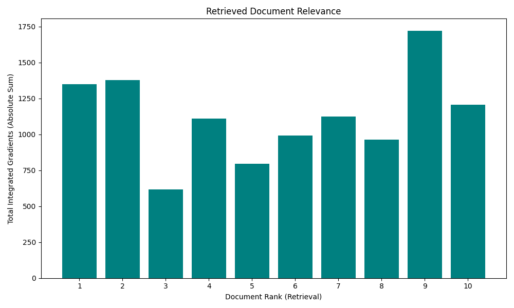
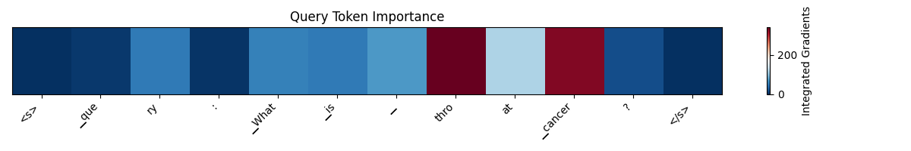
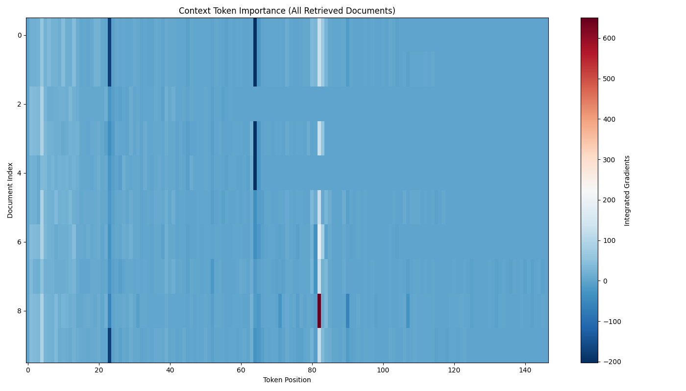

Token Comparison

Compares token importance in the Query vs. the Context. Points along the diagonal indicate terms that were equally important in both, suggesting exact keyword matching. Off-diagonal points suggest semantic retrieval or drift.
Weighted Overlap

Compares token importance in the Query vs. the Context. Points along the diagonal indicate terms that were equally important in both, suggesting exact keyword matching. Off-diagonal points suggest semantic retrieval or drift.
Document Relevance

Average relevance score of retrieved documents by their rank. This shows how 'confident' the retriever is in its top candidates versus lower-ranked ones across the dataset.
Query Heatmap

Visualizes the direct influence of input tokens (x-axis) on the generated output (y-axis).
Red = Positive contribution (increases probability of token).
Blue = Negative contribution (decreases probability).
Context Heatmap

Visualizes the direct influence of input tokens (x-axis) on the generated output (y-axis).
Red = Positive contribution (increases probability of token).
Blue = Negative contribution (decreases probability).